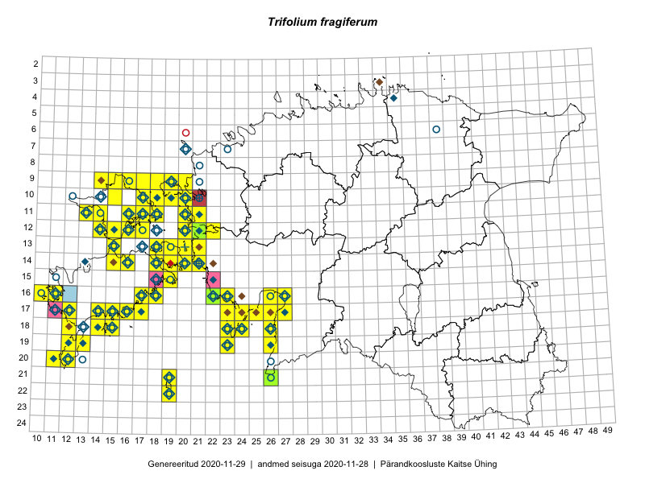

Trifolium fragiferum
Uuendatud: 2016-12-01
Kaardile koondatud taksonid: Trifolium fragiferum L.

Kaart põhineb 80 kirjel, neist vaatlusi 79 ja eksemplare 1.
Kuvatud viited 20 esimesele andmebaasikirjele, ülejäänud PlutoFis
- Toomas Kukk, Eerik Leibak: 2015-08-09: 13-15: ala
- Toomas Kukk, Eerik Leibak: 2015-08-09: 14-15: ala
- Toomas Kukk, Peedu Saar: 2015-08-05: 20-11: ala
- Toomas Kukk, Eerik Leibak: 2015-08-12: 10-17: ala
- Toomas Kukk, Eerik Leibak: 2015-08-12: 09-17: ala
- Toomas Kukk, Eerik Leibak: 2015-08-10: 13-15: ala
- Peedu Saar, Elle Roosaluste: 2015-07-12: 13-20: ala
- Toomas Kukk, Eerik Leibak: 2015-08-11: 09-15: ala
- Toomas Kukk, Eerik Leibak: 2015-08-11: 09-16: ala
- Tiit Hallikma, Toomas Kukk: 2015-08-27: 12-21: ala
- Peedu Saar, Ott Luuk: 2015-10-14: 16-11: ala
- Meeli Mesipuu, Kadri Tali: 2015-07-06: 16-18: ala
- Meeli Mesipuu: 2015-07-15: 16-27: ala
- Ott Luuk, Elle Roosaluste: 2015-05-29: 18-23: ala
- Meeli Mesipuu: 2015-07-18: 16-26: ala
- Eeva-Maria Jeletsky, Tarmo Niitla: 2015-06-22: 11-16: ala
- Ott Luuk, Peedu Saar: 2015-08-27: 12-21: GPS punkt
- Oliver Parrest: 2015-07-01: 19-13: ala
- Maret Gerz, Leena Gerz: 2015-08-12: 17-24: ala
- Mari Reitalu, Triin Reitalu: 2014-08-15: 20-11: ala